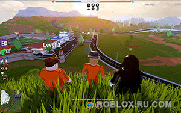
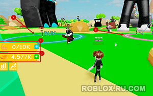

|
Категория: | Онлайн платформа |
| Поддерживаемые ОС: | Windows XP | |
| Разрядность: | 32 bit, 64 bit, x32, x64 | |
| Для устройств: | Компьютер | |
| Язык интерфейса: | на Русском | |
| Версия: | Последняя | |
| Разработчик: | Roblox Corporation |
Просто как не когда установить Roblox для Windows XP по тому как одним из главных отличий Roblox от других подобных игр является наличие огромного количества вариантов развития игрового персонажа или мироустройства, за счет чего каждый плейс отличается от другого — один будет миром фантастики, другой фэнтези с орками, эльфами и драконами. В третьем надо будет приютить редкое и уникальное животное, чтобы заботиться о нем, примерно, как дети девяностых проявляли нежность к электронному Тамагочи. Есть и гонки, и имитация торговли, и тысячи других оригинальных опций.
|  |  |  |
{kind=link}
{kind=link}
Роблокс для Windows XP на компьютер
В игре множество различных опций, каждая из которых создана в отдельном мире. Каждый игрок может спроектировать собственное пространство или плейс с помощью конструктора и украсить его по своему вкусу, используя различные объекты, настройки. Так, например, есть возможность создавать свои собственные карты, персонажей и различные игровые режимы. Допускается играть в режиме «кооператив», в котором может принимать участие несколько игроков. Программа нетребовательна к железу, благодаря чему Roblox у вас без лишних усилий получится запустить даже на старом компьютере, ноутбуке или нетбуке. Не понадобится приобретать дорогостоящую видеокарту, какие-либо дополнительные гаджеты, наподобие джойстиков.

Несмотря на то, что Windows XP считается устаревшей системой, она еще по-прежнему очень актуальна, многие предпочитают ее использовать на различных слабых ноутбуках, нетбуках и компьютерах, которые не способны потянуть современные игры, но отлично справляются со «старичками». Один из таких актуальных по сей день проектов — Roblox, который зародился в уже совсем далеком от нас 2006, но по-прежнему очень популярен.
Roblox для версий windows:
Возможности и преимущества Roblox
Множество жанров игр

Играть с друзьями

Создавать свои миры

Для всех устройств

Скачать Роблокс для Windows XP бесплатно
| Приложение | OS | Распаковщик | Формат | Версия | Загрузка |
|---|---|---|---|---|---|
| Roblox (Роблокс) | Windows xp | OpenBox | x32 | Бесплатно (на русском) | |
| Roblox (Роблокс) | Windows xp | OpenBox | x64 | Бесплатно (на русском) | |
| Roblox (Роблокс) | Windows xp | OpenBox | x32 — x64 | Бесплатно (на русском) |
Как установить Roblox для windows XP:
Запустите файл.

Ознакомьтесь с информацией и нажмите "Далее".

Нажмите "Далее", или снимите галочки с рекомендуемого ПО и нажмите "Далее". Если снять все галочки, рекомендуемое ПО не установится!

После нажатия далее, произойдет установка.

В этом мире, хотя он и «населен» не в последнюю очередь школьниками, вертится огромное количество вполне реальных денег. Даже сами разработчики признают, что это не столько игра типа MMORPG, сколько виртуальная песочница, магазин в магазине, где каждый желающий создает свое приложение, привлекает туда покупателей. Способов вполне законно заработать на Roblox очень много, что тоже добавляет платформы изрядную долю популярности.
Вполне себе маст хэв. Неделя полет нормальный. 5 баллов.
Насчет установки проблем не было.
Скачал ради интереса, залиппп
Классная приколюха, поиграю н а досуге.
нет
Интересная игра, однако!
Норм игруша, Мне Нра, улёт! Гоняю в неё